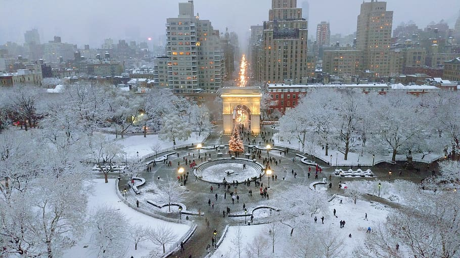

Monteverde

Monteverde, Costa Rica is situated 4,662 feet above sea level. Monteverde's famed cloud
forests are the byproduct of fog (a thick, low-hanging cloud) tangling amongst the leaves and branches
of the forest canopy. Trails and hanging bridges offer a close-up view of the diverse variety of animals
and plants living in the forest.
One of the main tourist locations in Monteverde is the town of Santa Elena, which is not only home
to a variety of restaurants with delicious food, but a serpentarium as well. You can enjoy hiking,
ziplining, and observing the native wildlife while staying in Monteverde. It's a truly beautiful place.
Photo Gallery

You can hike trails and zipline through the Monteverde cloud forests.

You can visit hummingbirds at Monteverde's Selvatura Park's hummingbird garden, which exhibits over 14 different species of hummingbird.

Hanging bridges over the cloud forests allow for a birds-eye view.
Scenary
- hanging bridges
- Beautiful birds
- Cloud forest
New York

New York City thrives as a vibrant tapestry of cultures, languages, and experiences.
Its streets pulse with energy, reflecting the city's boundless diversity. From the rhythmic beats of
street performers in Times Square to the aroma of diverse cuisines wafting through neighborhoods, NYC's
lively atmosphere encapsulates a living, breathing microcosm of the world.
From the iconic skyline to the bustling streets, it's a place where dreams are both pursued and
realized. The city's fast-paced lifestyle is balanced by its diverse communities, offering a unique
blend of cultures, cuisines, and experiences around every corner. Amid the hustle and bustle, there's a
sense of constant motion and an electrifying energy that makes life in the Big Apple truly
extraordinary.
Photo Gallery
Winter in Washington Square Park brings another view of NYC

Time square is crowded with people from all over the world, and its aliveness flows in the lights and shadows of the city.

The Yellow cab takes you through the heart of NYC
Scenary
- Time Square
- Yellow cab
- Brooklyn Bridge
Bangkok

Bangkok, Thailand's capital, is a large city known for ornate shrines and vibrant
street life. It is officially known in Thai as Krung Thep Maha Nakhon and colloquially as Krung Thep.
Bangkok welcomes more visitors than any other city in the world and it doesn't take long to realize why.
Bangkok is a city of contrasts with action at every turn. Marvel at the gleaming temples, catch a tuk
tuk through bustling Chinatown or take a longtail boat through floating markets. Food is another Bangkok
highlight, from local dishes served at humble street stalls to haute cuisine at romantic rooftop
restaurants.
Photo Gallery

Khlong Lat Mayom, one of the best floating markets in Bangkok.It is most famous for its food. Try snakehead fish and the shrimps.

The Grand Palace is a complex of buildings at the heart of Bangkok.

Wat Arun is one of the most popular and well-known places of worship. Famous for its iridescent glow when first light hits its porcelain finish at dawn, it also resembles an ancient city at first glance.
Scenary
- Wat Arun temple
- Grand Palace
- Khlong Lat Mayom